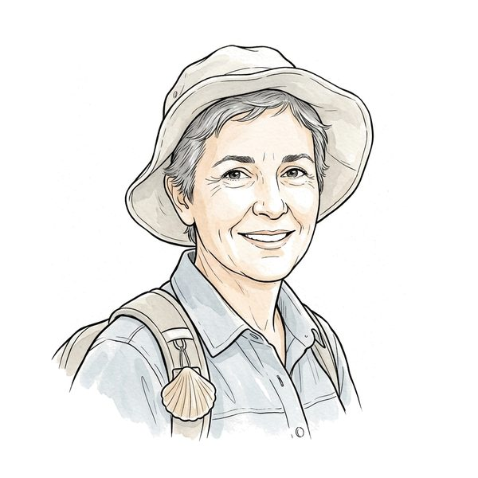
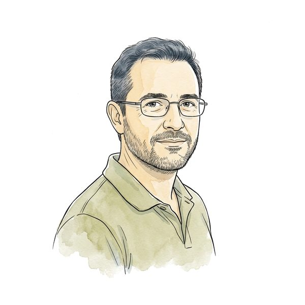
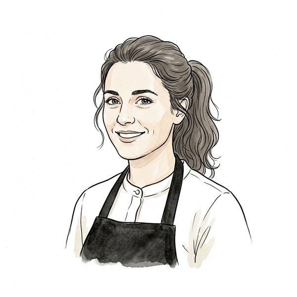
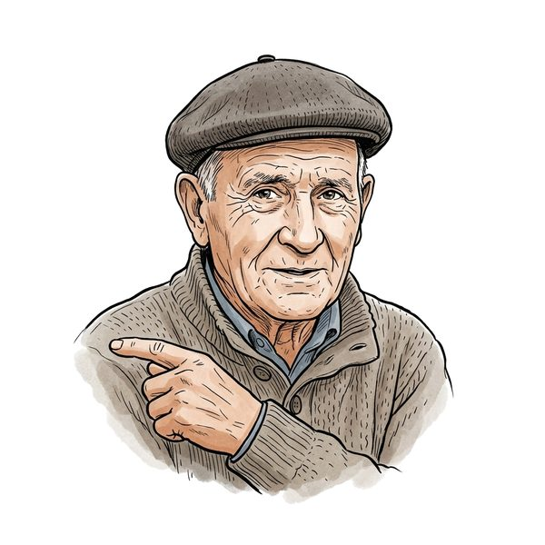
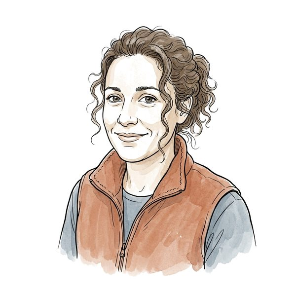
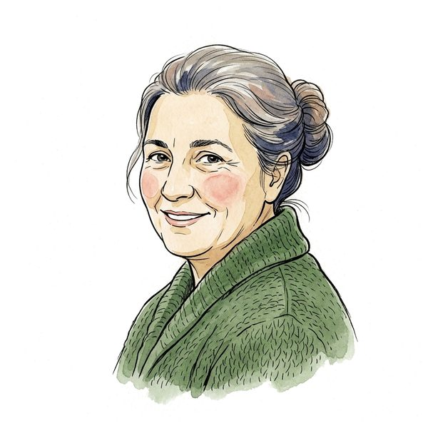
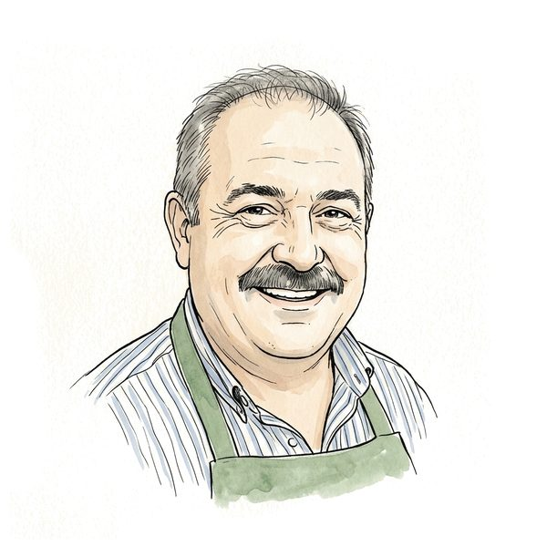
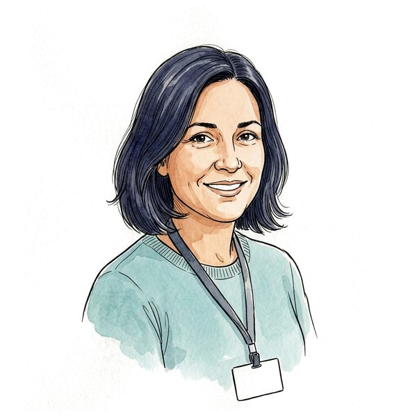

Construite pendant votre absence, le 25 septembre 2026, à partir du plan. Une application pour
téléphone : dix journées, une par étape du Camino francés, de Roncesvalles à Santiago ; une credencial
qui se remplit de tampons ; des voix d'Espagne ; et Marta, une pèlerine de Valladolid, qu'on retrouve chaque soir.
L'ouvrir sur votre téléphone
Visez le code avec l'appareil photo du téléphone, ou ouvrez :
https://portail.edufrancis.ca/modules-autonomes/compostelle/ — aucune connexion, aucun code : tout reste dans le téléphone.
La première fois, on choisit « pèlerin » ou « pèlerine » (l'espagnol accorde : cansado, cansada).
Ce qui est fait
10journées, sept temps chacune
169mots en onze planches, 82 dessinés
692sons, douze voix d'Espagne
10faux amis, chacun dans sa phrase
Temps de la journée
Ce qu'on y fait
1. Le lieu
La vignette, trois paragraphes pour situer (histoire, tourisme), ce qu'on y visite — avec le mot espagnol et sa voix.
2. Les mots du jour
Des cartes dessinées ; on touche, on entend, la traduction apparaît. Elle reste cachée d'abord.
3. J'entends, je trouve
Un mot entendu, quatre images.
4. Ce qu'on me répond
La famille maîtresse : la personne du lieu répond, à sa vitesse ; que veut-elle dire ? Chaque mauvais choix a sa rétroaction.
5. Je le dis
La situation en français, on la dit au micro (reconnaissance es-ES du navigateur), puis le modèle.
6. La scène
La situation jouée avec la personne du lieu : ses répliques en voix, nos choix, la rétroaction. À León, l'allergie est éliminatoire et le dit d'avance.
7. Le soir, avec Marta
La conversation du lieu (les jambes, la nourriture, pourquoi on marche, la pierre de la Cruz de Ferro, l'au revoir). Sa voix porte une intention par réplique. Elle se souvient : la raison choisie sur la Meseta revient à Santiago.
Et autour : la poche (onze rubriques, les urgences, « Montrer » en grand, et « Préparer pour le chemin » qui met
tout dans le téléphone pour marcher sans réseau), tous les mots, les faux amis, le test « Suis-je prêt ? » (deux formes,
il situe sans noter), et une Compostela à imprimer à la fin — présentée clairement comme un souvenir, pas comme la vraie.
Dans la scène et le soir, on peut répondre à voix haute au lieu de toucher : la phrase entendue rejoint le choix le plus proche,
et reçoit la même rétroaction. Les voix peuvent être ralenties. Et « Ajouter à l'écran d'accueil » installe l'application
sous le nom Compostelle, avec la coquille pour icône ; une fois « préparée », elle marche sans réseau (éprouvé sur le site en ligne :
622 fichiers gardés).
Passée à la boucle didactique
Un auditeur qui ne l'avait pas écrite l'a passée à la grille de 23 critères, page servie et jouée au téléphone.
Cinq tours, chacun par un auditeur neuf : 2/8/6 → 0/5/13 → 0/4/8 → 0/1/10 → 0/0/5 (bloquants/majeurs/mineurs).
La boucle est sortie au tour 5. Comme toujours, les majeurs de chaque tour venaient des corrections du précédent.
Ce que ça a changé : un test « Suis-je prêt ? » sur des phrases nouvelles, cinq objectifs, l'allergie éliminatoire et dite au micro ;
« Mon allergie » parmi huit, qui traverse tout (la scène de León, Pamplona, la poche, le test, un son par allergène) ; les scènes
s'écoutent avant de se lire ; « Je le dis » exige qu'on essaie, et la phrase d'allergie qu'on la dise juste. En la rejouant pour les
huit allergènes, on a trouvé une vraie faute de fond : la « bonne » entrée de León (soupe castillane) contenait œuf et pain.
Restent, laissés à dessein : le texte touristique (votre demande) et une réplique de conséquence après une erreur (reportée).
Le journal de la boucle.
Les gens du chemin

Martapèlerine de Valladolid, 58 ans, professeure de musique à la retraite

Javierhospitalier bénévole, Roncesvalles

Ainhoaserveuse au comptoir d'un bar, Pamplona

Don Fermínvieil homme du village, Puente la ReinaPilarpharmacienne, Logroño

Rocíohospitalière de l'albergue municipal, BurgosÁlexserveur de restaurant, León

Uxíahospitalière galicienne, O Cebreiro

Manoloépicier, Sarria

Carmenemployée du bureau du pèlerin, Santiago
Décidé à votre place
Vous n'aviez pas exporté les décisions du plan : j'ai pris les onze recommandations. Chacune se renverse.
Espagnol d'Espagne ; tú entre pèlerins, usted au comptoir, vosotros reconnu seulement ; galicien reconnu.
Le Camino francés seul ; la credencial à tampons comme fil ; les vignettes d'étape comme décors.
La poche hors ligne ; voix Azure es-ES (production faite : environ 1 $ de voix) ; Marta, compagne de route récurrente.
Le thème francis, le jaune de la flèche réservé à la progression.
La diffusion : rien n'est promis au public ; l'application est en ligne mais n'est reliée qu'au classeur.
Ce qui reste, et qui vous revient
Le jeu de rôle libre avec l'assistant — prêt, éprouvé, pas encore offert. Les scènes écrites marchent sans IA et sans
réseau. La suite « avec assistance » (la même personne, ou Marta, qui répond à ce qu'on dit vraiment ; trois vitesses ; micro ou
clavier ; un bilan en français) est dans la page, derrière un drapeau baissé. Je l'ai jouée de bout en bout sur un serveur jetable :
à León, Álex savait que la salade contient des noix et l'a dit à la pèlerine allergique ; à Carrión, Marta a relancé sur « ma vie a
beaucoup changé ». Il manque deux choses. La fusion de la branche couloir/compostelle-jr (treize lignes dans
server.py, que la session de l'hôtel tenait ce soir-là), puis JEU_LIBRE = True. Et votre décision sur
l'accès : l'assistant exige un code d'élève, et un pèlerin n'en a pas. Je propose un groupe « Pilote Compostelle » dans le
portail, un code par pèlerin du pilote — la dépense reste ainsi bornée et visible dans « Les chiffres ».
La relecture par une personne d'Espagne : 519 répliques et phrases, écrites par moi. Un second regard les a déjà
passées au crible (un agent relecteur, distinct de celui qui a écrit) : 25 remarques, toutes appliquées — deux vraies fautes
(« nosotros » que Marta doit dire au féminin, un don Fermín qui passait au tutoiement), des temps d'Espagne (te he visto
plutôt que te vi pour aujourd'hui), et surtout des invraisemblances de parcours : la fontaine d'Irache est au lendemain de
Puente la Reina, la Cruz de Ferro trois jours avant O Cebreiro, Melide trois étapes après Sarria. Une oreille d'Espagne reste nécessaire.
Les faits du chemin (heures, prix, 2 tampons par jour depuis Sarria, questions du bureau du pèlerin) : vraisemblables, à vérifier et dater.
Les 17 extraits que le contrôle signale, ci-dessous : tous s'expliquent (mots basques ou galiciens, un nom français dans une bouche espagnole,
des chiffres écrits en chiffres par la reconnaissance), mais c'est votre oreille qui tranche.
À écouter : les 17 extraits signalés
roncesvalles/scene-7-c0.mp3 — Ximena attendu « Gracias. ¿A qué hora se cierra la puerta? » · entendu par la reconnaissance « » (0.0)
roncesvalles/soir-1-c0-m.mp3 — Ximena attendu « ¡Claro! Encantado. Yo soy de Quebec. » · entendu par la reconnaissance « » (0.0)
roncesvalles/soir-4.mp3 — Marta attendu « Pues lo hablas muy bien. Yo te hablo despacito, ¿vale? Yo era profesora de música. ¿Y tú, a qué te dedicas? » · entendu par la reconnaissance « » (0.0)
o-cebreiro/scene-8.mp3 — Uxía attendu « ¡Grazas! Se dice «grazas». ¡Y bo Camiño! » · entendu par la reconnaissance « De Asas.Se dice, gracias.Ivoca Miño. » (0.29)
santiago/dire-0.mp3 — Ximena attendu « Empecé en Saint-Jean-Pied-de-Port. » · entendu par la reconnaissance « Empecé en San Jean Pierre, Deporte. » (0.46)
mots/pintxo.mp3 — Ximena attendu « un pintxo » · entendu par la reconnaissance « Un pincho. » (0.5)
mots/kilo.mp3 — Ximena attendu « un kilo, medio kilo » · entendu par la reconnaissance « 1 kg, medio kilo. » (0.5)
voir/pamplona-3.mp3 — Ximena attendu « los pintxos » · entendu par la reconnaissance « Los pinchos. » (0.5)
santiago/scene-3-c0.mp3 — Ximena attendu « Desde Saint-Jean-Pied-de-Port, en Francia. » · entendu par la reconnaissance « Desde Sun Jam pierde port en Francia. » (0.53)
mots/hora_ocho_media.mp3 — Ximena attendu « a las ocho y media » · entendu par la reconnaissance « A las 8:30 H. » (0.6)
burgos/scene-9-c0.mp3 — Ximena attendu « A nombre de Tremblay. Se escribe: te, erre, e… » · entendu par la reconnaissance « A nombre de Trembley se escribe.TRE. » (0.62)
test/0-10-c0.mp3 — Ximena attendu « Desde Saint-Jean, en Francia. » · entendu par la reconnaissance « Desde Shanghai, en Francia. » (0.67)
o-cebreiro/dire-2.mp3 — Ximena attendu « Mi mochila va hasta Triacastela. » · entendu par la reconnaissance « Mi mochila va hasta tria castela. » (0.73)
o-cebreiro/scene-5-c0.mp3 — Ximena attendu « Hasta Triacastela, al albergue municipal. » · entendu par la reconnaissance « Hasta tria castela al albergue municipal. » (0.73)
pamplona/soir-4.mp3 — Marta attendu « Txis-to-rra. Oye, ¿y mañana hasta dónde vas? » · entendu par la reconnaissance « Pistorra.¿Oye, y mañana hasta dónde vas? » (0.75)
o-cebreiro/ecoute-3.mp3 — Uxía attendu « En gallego, «rúa» es «calle» e «igrexa» es «iglesia». » · entendu par la reconnaissance « En gallego, lua es calle e nigrexa es iglesia. » (0.78)
test/0-0.mp3 — Javier attendu « Quedan dos camas, arriba. Son doce euros y cerramos a las diez y media. » · entendu par la reconnaissance « Quedan dos camas arriba, son €12 y cerramos a las 10:30 H. » (0.79)
Ce que ça a coûté
≈ 8 $d'images : 82 mots, 10 portraits, 12 vignettes, et les reprises
≈ 1 $de voix chez Azure, retentatives comprises
0par usage : aucune IA à l'exécution tant que le jeu de rôle libre n'est pas branché
Livraison du 25 septembre 2026 · « En route vers Compostelle ».
Produit par build/compostelle_livraison.py — ne pas l'éditer. L'application : build/compostelle_app.py.